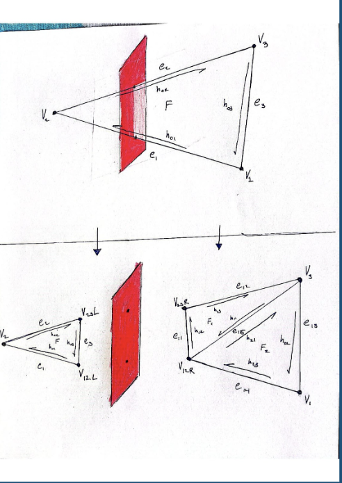
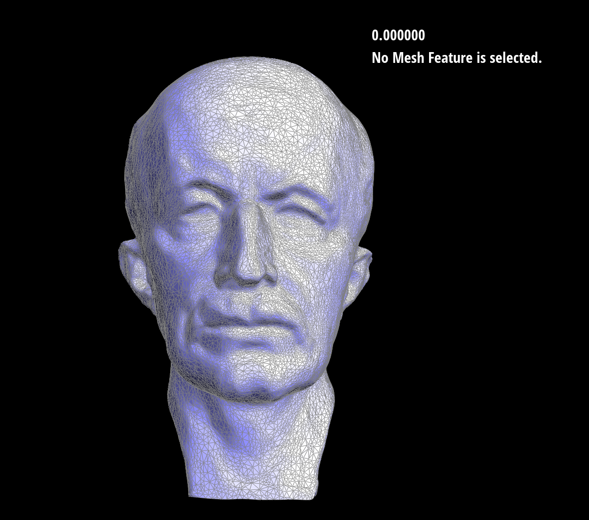
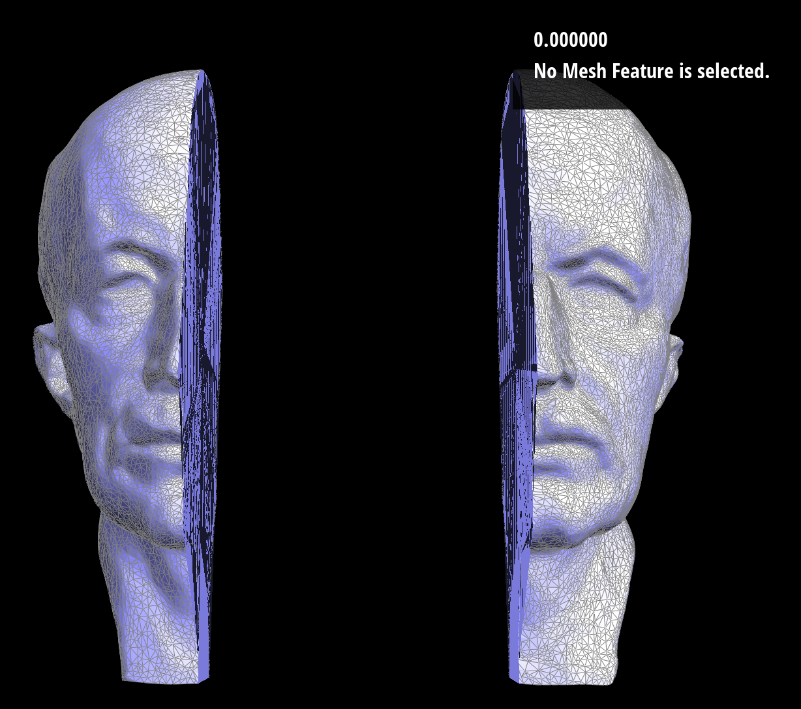
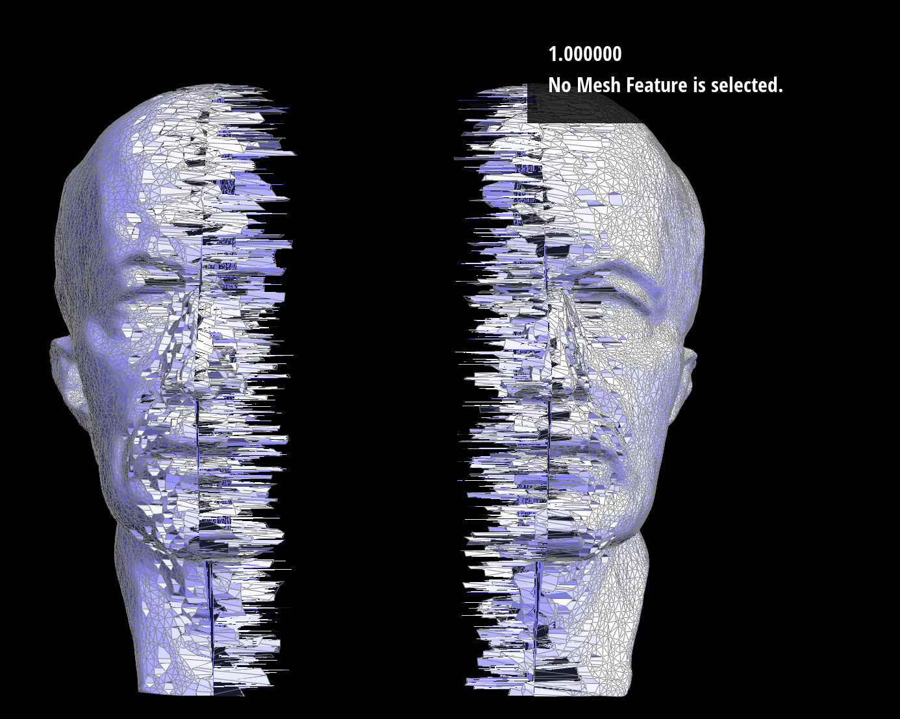

CS184 Final Project - Max Lord, Eugenia Gavrilova, Max Litster, Aidan Meyer
Abstract
1. A paragraph summary of the entire project.
For this project, we wanted to implement a mesh cut feature into project 2. The goal was for a user to be able to define two points and our program would cut the mesh along that plane and then programatically fill the holes in the two resulting meshes with triangles.
Also, we wanted to add a 'stickiness' feature where a user could define how clean the cut would be. In a perfectly clean cut, all vertices on the left side of the cut would be in the resulting left mesh and vice versa, similar to cutting through butter,
but in an unclean cut some vertices on the left side of the cut would stick to the right side of the mesh, much like tearing apart a loaf of bread. Additionally, we made a quick extension demonstration using code from a project which inspired our own to demonstrate how this project could be used in virtual reality.
Technical approach
1. A 1-2 page summary of your technical approach, techniques used, algorithms implemented, etc. (use references to papers or other resources for further detail). Highlight how your approach varied from the references used (did you implement a subset, or did you change or enhance anything), the unique decisions you made and why.
For the technical approach we first iterated through every vertex and then determined which side of the cut it was on by subtracting it from the point on the plane and taking the dot product of that with the normal of the plane.
By taking the norm of this value we know what side of the plane the vertex is on or if it is orthogonal to the norm meaning the dot product is zero and the vertex is on the plane defined. We then shifted all vertices by a scalar of the normal away from the plane.
For the next part we referred to an algorithm we found that was implemented in unity. This algorithm used a different version of mesh representation so we had to translate the ideas used into the half-edge representation.
The diagram of the triangle split shows how this is done. To handle each triangle as an individual case we iterated through the faces and checked for cross edges by using the vertex boolean we added that reports which side of the split it is on.
We then calculated the intersection point with the plane by ray tracing on the cross edges. Then following the concept diagram we created all the needed components to split the triangle into three parts.

At this point we have just a perfectly split mesh with two open faces at the cut. To fill in this cut we stored all vertices that touch the edge while we process them and then take the average of these points.
This creates a mid point for us to now make triangles with the edge vertices and essentially patch up the surface. One thing to note is that this way of closing the surface only works accurately with convex shapes since triangles on the surface will be effectively drawn over the convex regions of the surface shape.
In the end this created a visually accurate representation of the mesh being sliced on the plane of choice. The internal half-edge structure is not perfectly maintained at the center because specific twin edges could not be reassigned through this iterative process.
This problem seems to be easier to fix with different mesh representations.
To add the stickiness functionality, we generated a small random value between 0.5 and -0.5 and scaled this value in accordance with the stickiness coefficent the user can edit with the 'C' and 'V' keys.
Then, after determining the plane to split on, we added this scaled random value to each vertex's position, so some vertices close to the plane on the left side of the mesh would randomly be pushed to the right side of the mesh for the split.
Additionally, we have a coefficient in the code that determines how far our vertices move apart after being split, which is hard coded.
To gather user input to define the plane, we first worked with the GUI code to implement a special 'plane' mode activated by pushing 'P': when this mode is activated, the points selected by the user define two endpoints of a plane that extends infinitely along the z-axis, cutting the intersected mesh in half. In order to implement this, the mouse's x and y coordinates were selected and used to define a vector on the screen. The normal of the plane was computed by rotating this vector, and from here we passed a point intersecting the axes and the normal vector to the plane-intersection algorithm described above to adjust the components of the mesh, resulting in a mesh cut along a user-defined plane.
After do some research on the algorithm for splitting a mesh using a plane we came across a unity implementation. This implementation is a similar algorithm to the one that we incorporated into the proj-2 except it is using a completely different mesh representation (info can be seen in linked video). Using this implementation in Unity, I wanted to explore some of the applications that this could be used for. After taking the VR decal this semester I had the knowledge needed to configure this into a VR interactable slicer. After some reconfiguring, creating of 3D assets with Gravity Sketch, and some nauseating VR debugging, I had a fully functional mesh slicing demo in VR. This was an exciting way that such an algorithm can be applied.
2. A description of problems encountered and how you tackled them.
The main problems we encountered related to the general mesh cut and filling the hole created by the cut. We used the debugger to check vertex and half-edge location and individually examine surfaces to ensure they were correct.
We also had a minor issue with user-defined planes operating incorrectly causing meshes split upon a different plane but fixed this after examining our normals.
Also, it was initially a little difficult to figure out how to edit the mesh and the project 2 GUI, but we looked at the existing functionality of the mesh and how that was coded and applied similar techniques to create all of our mesh and GUI modification code.
3. A description of lessons learned.
We learned from our VR experiment that because of mesh representation, the destruction of objects in rendered simulations can be a difficult problem. Some ways around this are different object representations apart from mesh.
Additionally, we learned that a perfect fill of a hole in a mesh can be difficult because of unpredictable vertex locations, but we can get a good cover with the aforementioned fill strategy.
Results
Your final images, animations, video of your system (whichever is relevant).
Video of Perfect Teapot Cut:
Video of Rough Teapot Cut:
VR Experiment Video:
Base Image, Perfect Cut Image, and Rough Cut Image:



References
We were inspired by this youtube video and used the code from this youtube video for our unity VR demonstration, but Unity works with a point cloud so had to develop our own half-edge mesh specific algorithm to build on project 2 as shown:
https://www.youtube.com/watch?v=BVCNDUcnE1o
Contributions
We frequently met up to discuss all facets of the project and provided input and helped debug each other's sections. Max Litster and Eugenia largely handled the user-defined plane, Max Lord mostly worked on the stickiness feature,
Aidan coded the mesh fill algorithm and ran the Unity experiment in VR, and we were all involved in the creation of the initial cut algorithm before considering the fill. We also worked together on the mini-assignments like writeups and presentations.